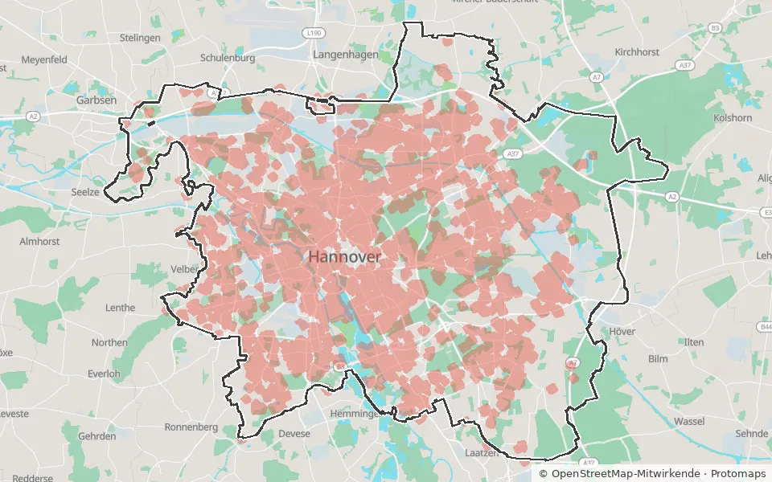
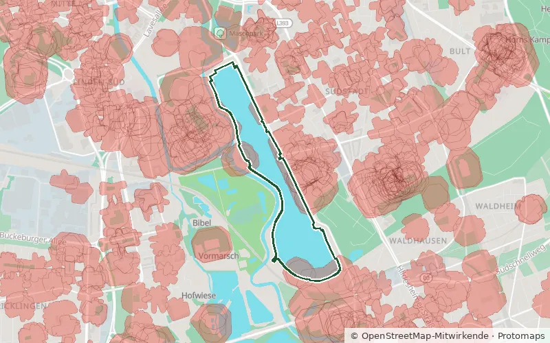
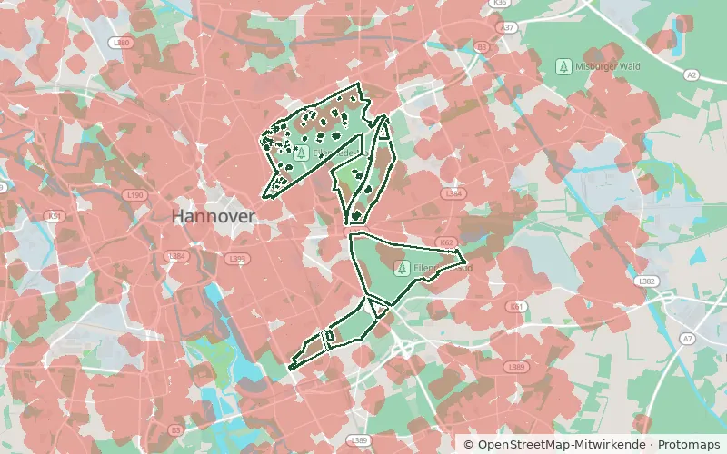
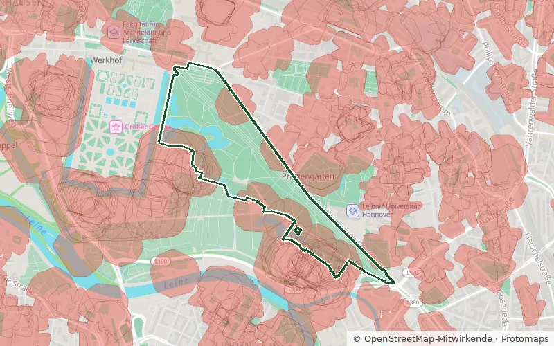
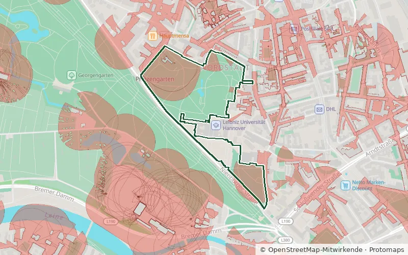
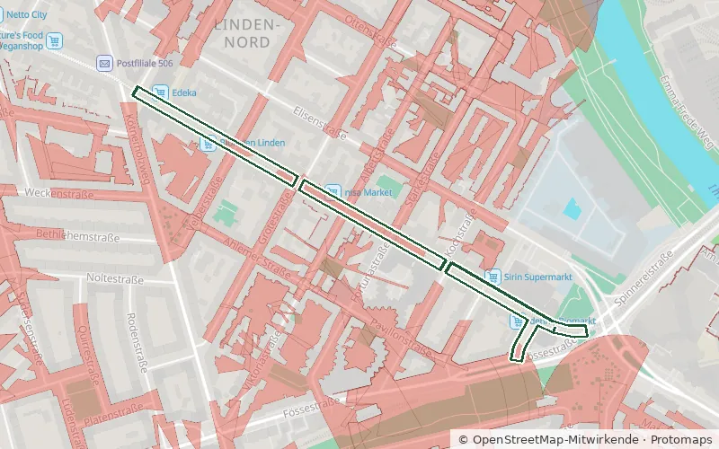
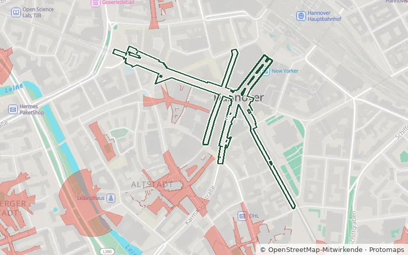

In Hannover ist öffentliches Kiffen auf 43 km² verboten, das sind 21,2 % der Stadtfläche von 204 km². Grund sind 2 670 Einrichtungen wie Schulen und Spielplätze: In ihrer Sichtweite, bis 100 Meter vom Eingang und ohne Gebäude dazwischen, verbietet § 5 KCanG den Konsum. Dazu kommen die Fußgängerzonen von 7 bis 20 Uhr und überall die Gegenwart von Minderjährigen.
Ohne die Wälder, vor allem die Eilenriede (16 % der Stadtfläche sind Wald), liegen 23,0 % der Stadt in einer Zone.

Woher die Zonen kommen
| Einrichtung | Anzahl | Zonenfläche |
|---|---|---|
| Schulen | 133 | 8,4 km² |
| Kitas und Kindergärten | 473 | 10,7 km² |
| Kindertagespflege | 12 | 0,3 km² |
| Spielplätze | 753 | 17,1 km² |
| Kinder- und Jugendeinrichtungen | 77 | 1,6 km² |
| Sportstätten | 1 222 | 20,4 km² |
Jede Art für sich gezählt, Überlappungen also mehrfach. Anbauvereinigungen nur, soweit in OpenStreetMap eingetragen.
Die meisten Zonen gehen auf die 1 222 Sportstätten zurück, danach auf die 753 Spielplätze.
Auf den städtischen Spiel- und Bolzplätzen verbietet die Spielplatzsatzung außerdem, zu rauchen und „Drogen aller Art“ zu konsumieren; dort dürfen nur Kinder und Jugendliche mit ihren Begleitpersonen hin, und nur von 7 bis 20 Uhr (Spielplatzsatzung).
Maschsee, Eilenriede und Gärten
Am Maschsee liegen 20 % der Wasserfläche in einer Zone, vor allem am Ufer mit seinen Sportanlagen. Im Maschpark hinter dem Neuen Rathaus sind es 55 %, um einen Spielplatz und die Kita im Rathaus.

Die Eilenriede (603 ha) liegt zu 19 % in einer Zone; im Wald selbst liegen nur wenige Spielplätze und Sportanlagen, die meisten am Rand.

Im Georgengarten sind es 33 %, um drei Spielplätze und die Sportanlagen am Rand, im Welfengarten vor dem Hauptgebäude der Universität 46 %: Dort liegen drei Spielplätze und eine Kita. Im Großen Garten in Herrenhausen sind es 11 %; die Gartenordnung verbietet das Rauchen nur in der Grotte (Gartenordnung).


Auf einem 100 Meter breiten Streifen Land entlang der Leine liegen 29 % in einer Zone. An der Limmerstraße in Linden, die in OpenStreetMap als Fußgängerbereich eingetragen ist, sind es 37 %.

Innenstadt
Eine eigene Liste der Fußgängerzonen hat die Stadt nicht veröffentlicht. Ihre Verordnung über die Waffenverbotszonen zählt die Fußgängerzone zwischen Hauptbahnhof und Steintor auf: Ernst-August-Platz, Bahnhofstraße, Kröpcke, Georgstraße von der Ständehausstraße bis zum Steintor, Schillerstraße, Teile von Rathenaustraße, Großer Packhofstraße und Andreaestraße und die Niki-de-Saint-Phalle-Promenade (Verbotszonenverordnung). Eine Karte der Stadt zum Radfahren in der City zeigt weitere Fußgängerzonen, etwa die Karmarschstraße nördlich der Osterstraße (Faltblatt City-Radring), und auch die Lister Meile ist Fußgängerzone (Stadt Hannover). Dort gilt von 7 bis 20 Uhr Konsumverbot; blau sind die Fußgängerbereiche aus OpenStreetMap.
Eine Sichtweite gibt es in der Fußgängerzone nicht, auch wenn eine Broschüre der Stadt es so darstellt: Verboten ist der Konsum in der Zone selbst, nicht daneben. Von Georgstraße, Bahnhofstraße, Kröpcke, Großer Packhofstraße und Karmarschstraße liegt kaum etwas in einer Sichtweiten-Zone (0 %), der Ernst-August-Platz vor dem Hauptbahnhof gar nichts (0 %). Von der Lister Meile sind es 27 %, vom Raschplatz 50 %, vom Andreas-Hermes-Platz 91 %.

Auf ihren oberirdischen Hochbahnsteigen verbietet die Üstra seit Januar 2026, Tabak und Cannabis zu rauchen (Stadt Hannover).
Hochschulen und Feste
Hochschulen sind nach § 5 KCanG keine Verbotsorte; in ihren Gebäuden verbietet das Nichtraucherschutzgesetz das Kiffen (Niedersächsisches Nichtraucherschutzgesetz). Das Gelände der Leibniz Universität am Welfenschloss liegt zu 36 % in einer Zone, die Hochschule Hannover zu 34 %.
Beim Frühlingsfest 2024 haben die Veranstalter Cannabis auf dem ganzen Gelände per Hausrecht verboten, wegen der vielen Kinder (dpa bei Hogapage, April 2024). Eine Regel des Landes für Volksfeste gibt es nicht.
Was sonst noch gilt
Ein Verstoß gegen § 5 Abs. 2 kostet in Niedersachsen 20 bis 500 Euro, in Gegenwart von Minderjährigen 20 bis 1.000 Euro (Bußgeldkatalog Niedersachsen); zuständig ist die Stadt, nicht die Region Hannover. Ein Modellprojekt für den Verkauf von Cannabis in Geschäften hat die zuständige Bundesanstalt 2025 abgelehnt (Stadt Hannover, 2025). Eigene Verbotszonen für Cannabis hat Hannover nicht (Stand 27. November 2026).
Häufige Fragen
Wo darf man in Hannover kiffen?
Nach § 5 KCanG außerhalb der roten Flächen, etwa in weiten Teilen der Eilenriede (19 % in einer Zone) und des Großen Gartens in Herrenhausen (11 %). Nicht auf Spiel- und Bolzplätzen, tagsüber nicht in den Fußgängerzonen, nie in Gegenwart von Minderjährigen und nicht gegen ein Hausrecht. Weiß heißt nicht sicher erlaubt: Hecken, Bäume und fehlende Einrichtungen kennt die Karte nicht.
Darf man am Maschsee kiffen?
Wo am Ufer keine Sportanlage und kein Spielplatz in Sichtweite liegt, verbietet es § 5 KCanG nicht; die Zonen zeigt die Karte. In Gegenwart von Kindern und Jugendlichen gilt das Verbot überall, und das Maschseefest hat keine eigene Regel, die wir gefunden haben.
Wie genau ist das?
Täglich aus OpenStreetMap gerechnet, mit Gebäuden als Sichthindernis; die Zahlen hier sind vom 27. November 2026. Eine Orientierungshilfe, keine Rechtsauskunft (wie gerechnet wird).
Fehlt eine Einrichtung? Korrekturen in OpenStreetMap stehen am Tag darauf auf der Karte; bitte nur eintragen, was es vor Ort gibt.